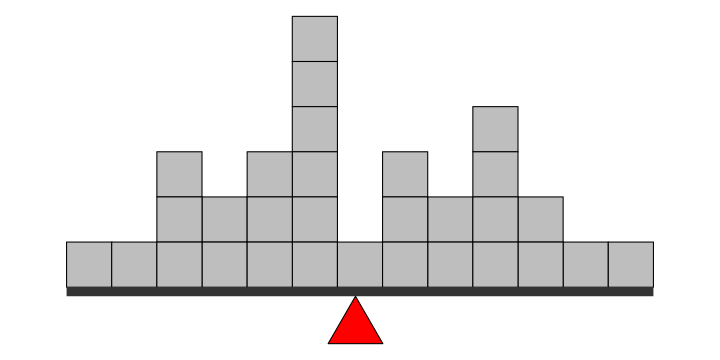
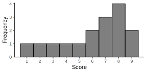
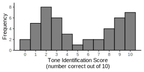

| \(X\) | \(f\) |
|---|---|
| 5 | 1 |
| 4 | 2 |
| 3 | 4 |
| 2 | 5 |
| 1 | 3 |
4|CENTRAL TENDENCY
Overview
Central tendency
A number to describe the center of a distribution
Purpose:
- To organize & summarize scores
- Find the single score that is most typical or best represents the entire group
- Allow comparisons
Finding the center
Where is the center of the distribution?
Finding the center
Where is the center of the distribution?
Finding the center
Where is the center of the distribution?
Measures of central tendency
Imagine you get the following grades:
- 90, 0, 80, 85, 90
How do you fairly describe all these scores with a single number?
Three ways:
- Mode: grade you get most often
- Median = grade that divides lowest 50% of scores from highest 50% of scores
- Mean = sum of grades / # of grades = \(\dfrac{\Sigma X} N\)
Measures of central tendency
- Imagine you get the following grades:
- 90, 0, 80, 85, 90
- Three ways:
- Mode = 90, 0, 80, 85, 90
- Median = 0, 80, 85, 90, 90
- Mean = (90 + 0 + 80 + 85 + 90) / 5 = 69
- Mode = 90, 0, 80, 85, 90
Mode
Mode
- The score/category with the greatest frequency
- What occurs most often?
| \(X\) | \(f\) |
|---|---|
| 90-99 | 7 |
| 80-89 | 4 |
| 70-79 | 5 |
| 60-60 | 3 |
| 50-59 | 0 |
| 40-49 | 1 |
Mode: generic examples
Mode: realistic example
Median
Median
- Definition:
- The midpoint of the scores in a distribution when they are listed in order from smallest to largest
- Divides the scores into two groups of equal size
- Equal number of data points either side of the median
- 50% below, 50% above
Locating the median
Put scores in order
Find the number that gives and equal number of scores on either side
Odd number of scores
- Median is the center score
1 2 3 4 5
Locating the median
Put scores in order
Find the number that gives and equal number of scores on either side
Even number of scores:
- Average the 2 numbers either side of center
1 2 3 | 4 5 6
(3 + 4) / 2 = 3.5
65 70 70 80 90 90
65 70 80 80 80 90 92 95
Mean
Mean
- What is the “average”?
- Take a set of scores
- Add them up
- Divide by how many there are
- Developed in the 16th century
- Mainly used by astronomers
- Adolphe Quetelet (1796-1874)
- Applied the concept to people
- Size measurements (BMI), divorce, crime, suicide
- See The Atlantic: How the Idea of a ‘Normal’ Person Got Invented
History
- American Civil War
- Mass production of uniforms
- Small, Medium, Large
- Also food rations, weapon design, etc
- 1926: Plane cockpits
- Based on average measurements
- By WW2 worked terribly
- Didn’t fit most pilots
- Nobody is average on all dimensions


Calculating the mean
- Sum of scores divided by number of scores
- Represented by a symbol (unlike mode & median)
Sample: \(M = \dfrac{\Sigma X} n\)
(sometimes \(\overline{X}\))
Population: \(\mu = \dfrac{\Sigma X} N\)
Visualizing the mean
- Another way of thinking about the mean
- The balance point for the distribution

Distributions
mean, median, mode


Distributions: income
- Sensitivity to outliers
- Extreme values; observations far from the center
- Mean is more influenced by outliers than median
Distributions: income

Summary
- Mode
- Most useful for nominal/ordinal data
- Reflects the single most common score
- Or more complicated (bimodal) distributions
- Median
- Most useful for interval/ratio data
- Represents the midpoint in terms of number of scores
- Less influenced by outliers; helpful for skewed data
- Mean
- Most useful for interval/ratio data
- Represents the midpoint in terms of distances of scores
- More influenced by outliers; best for normal data
Learning checks
- True or False: It is possible for more than 50% of the scores in a distribution to have values above the:
- mode
- mean
- median
- What shape is this distribution?
- What can you predict about its mode, mean, and median?

people_illustration = {
const w = 650
const h = 400
const personWidth = 80
const data = [
{id: 0, income: "$33,000"},
{id: 1, income: "$34,000"},
{id: 2, income: "$35,000"},
{id: 3, income: "$35,000"},
{id: 4, income: "$35,000"},
{id: 5, income: "$36,000"},
{id: 6, income: "$37,000"},
]
const svg = d3.select("#distributions-people-container")
.append("svg").attr("width", w).attr("height", h).attr("class", "invertable")
const imgs = svg.selectAll("image")
.data(data)
.enter()
.append("svg:image")
.attr('x', d => 50 + d.id * personWidth)
.attr('y', 50)
.attr('width', personWidth)
.attr("xlink:href", "media/person.svg")
const incomes = svg.selectAll("text")
.data(data)
.enter()
.append("text")
.attr('text-anchor', 'middle')
.attr('x', d => 50 + personWidth/2 + d.id * personWidth)
.attr('y', 30)
.style('font-size', '0.5em')
.text(d => d.income)
const mean1 = svg.append("g").selectAll("text")
.data(['median: $35,000', '<tspan style="font-family: Times; font-style: italic">M</tspan> = $35,000'])
.enter()
.append("text")
.attr('text-anchor', 'middle')
.attr('x', personWidth * 7/2)
.attr('y', function(d,i){return 250 + i*50})
.style('font-size', '0.8em')
.html(d => d)
}
monopoly_man = {
const w = 400
const h = 400
const personWidth = 80
const svg = d3.select("#distributions-monopoly-man-container")
.append("svg").attr("width", w).attr("height", h).attr("class", "invertable")
svg.append("svg:image")
.attr('x', 100)
.attr('y', 30)
.attr('width', 200)
<!-- .attr('height', 210) -->
.attr("xlink:href", "media/monopoly-man.svg")
svg.append("text")
.attr('text-anchor', 'middle')
.style('font-size', '0.5em')
.attr('x', w/2)
.attr('y', 30)
.text("$1 billion")
const new_mean = svg.append("g").selectAll("text")
.data(['new median: $35,000', 'new <tspan style="font-family: Times; font-style: italic">M</tspan> = $125 million'])
.enter()
.append("text")
.attr('text-anchor', 'middle')
.attr('x', w/2)
.attr('y', function(d,i){return 250 + i*50})
.style('font-size', '0.8em')
.html(d => d)
}